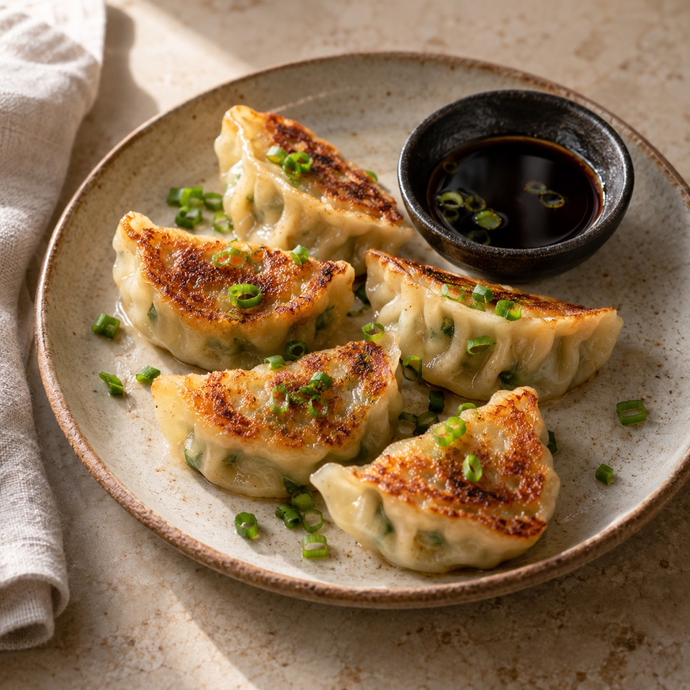
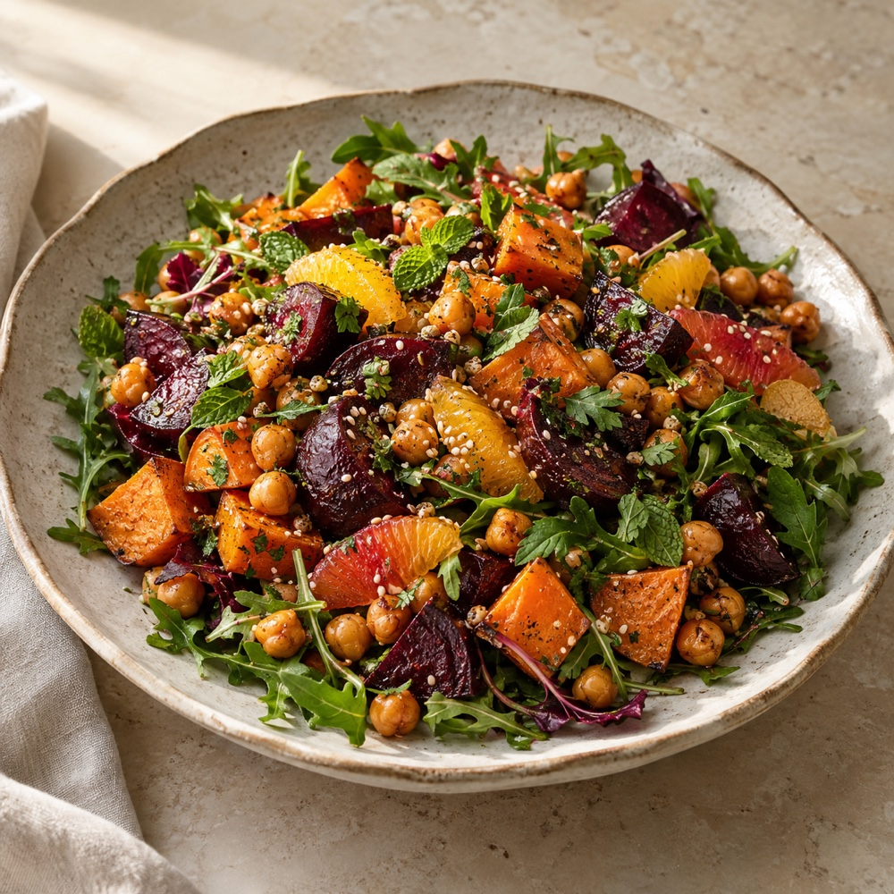
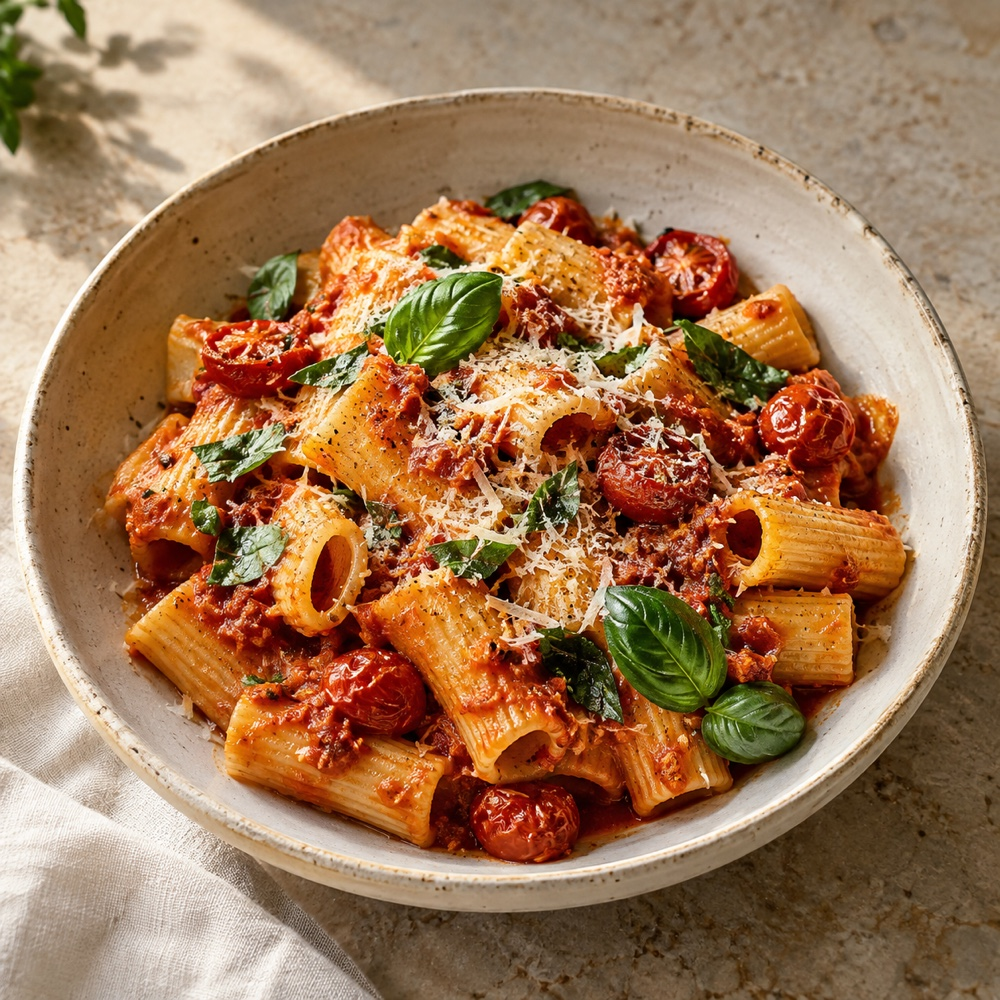
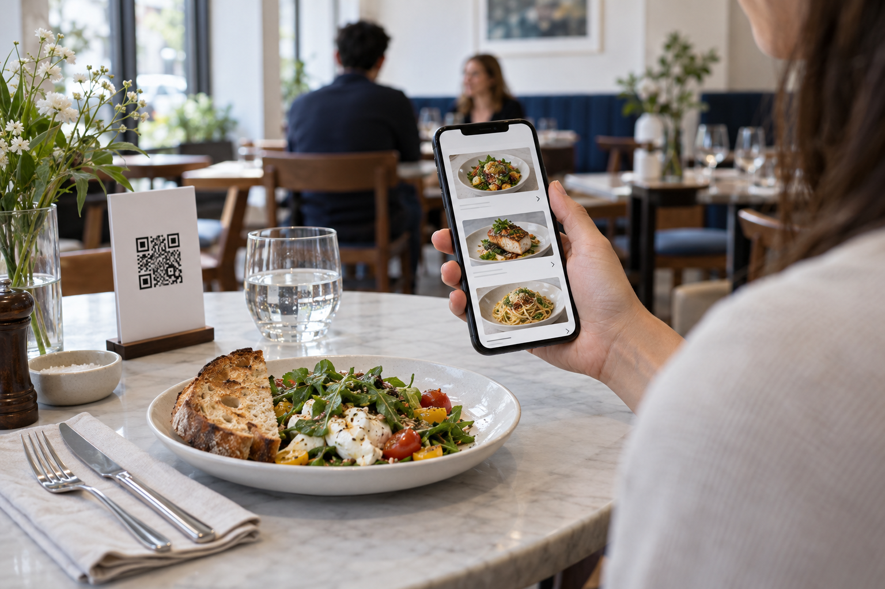
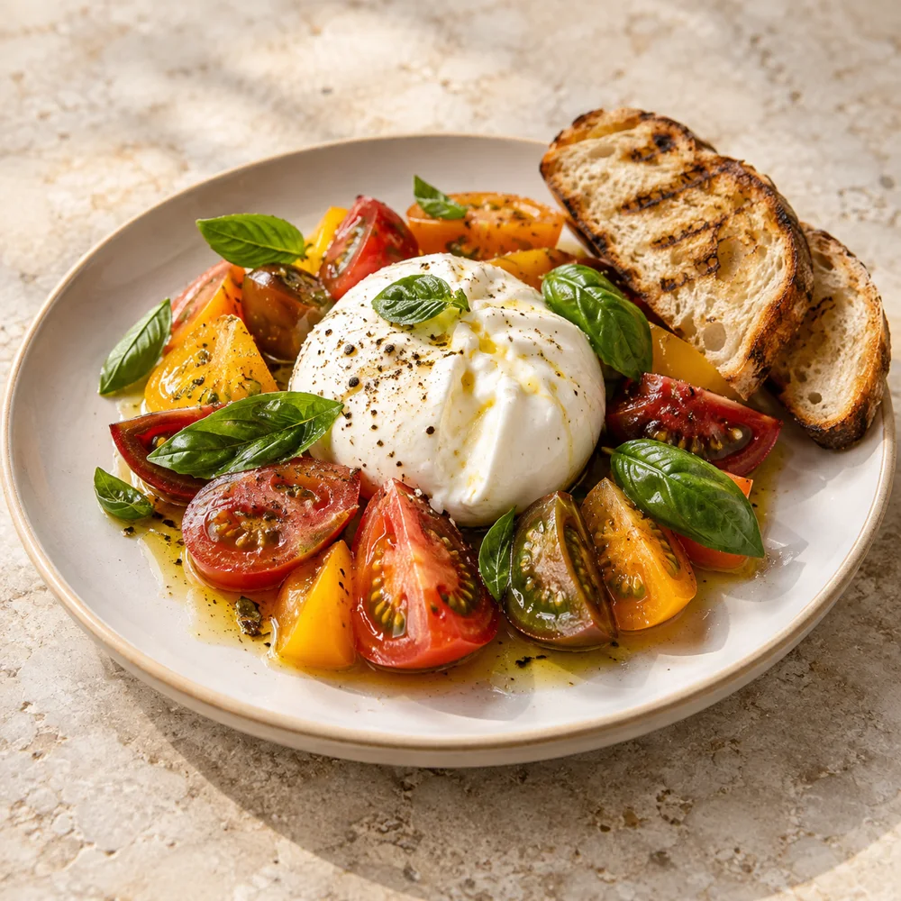
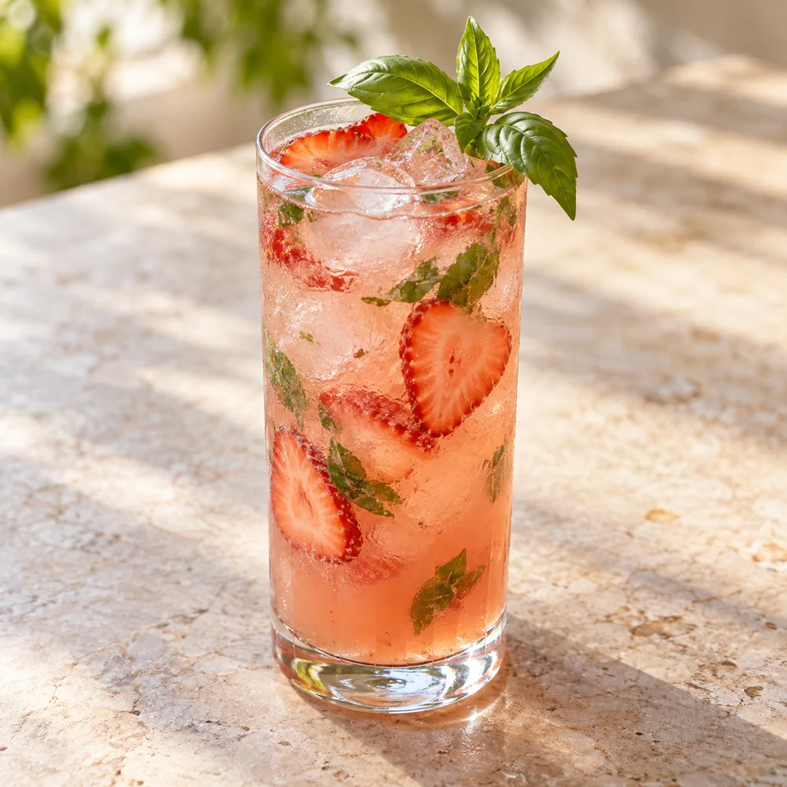

Photos of every dish
Let guests see the food before they choose. Use your photos, with labeled AI illustrations where needed.
A visual menu that helps guests choose, with photos, ingredients, and suggestions in one place.
Good food. Good company.
SAMPLE RESTAURANTGive every dish the detail it deserves. From the first photo to ingredients and suggested sides.

Let guests see the food before they choose. Use your photos, with labeled AI illustrations where needed.

Show ingredients and dietary details so guests can find options and ask your staff informed questions.

Introduce sides, starters, and drinks that complement the meal.
Sample dish images are AI-generated illustrations.



Change a price, add a special, or mark a dish sold out. Update it once and guests see the latest menu.
Send your current menu as a PDF, photo, or website link. We take care of the setup.
Review your dishes, photos, ingredients, and branding. Nothing goes live until you’re ready.
Share your menu with a link or QR code. Guests scan, explore, and find what they’d love to order.
A visual menu for your guests.
A simple dashboard for your team.
Per menu, including hosting.
Built and branded for you.
Works with your existing website. No change to your POS.
A few things to know before getting started.
No. Add your Palate menu link to your existing website, or embed the menu on your menu page. We help with setup. Your website stays yours.
Palate is for exploring the menu. Guests order and pay the way they do today. It works alongside your staff and your POS.
We use your own food photos wherever possible. For dishes without photos, AI-generated illustrations can help guests picture the food. They are clearly labeled as illustrations, and you review them before launch.
Your dashboard lets you edit dishes, prices, descriptions, photos, and ingredients. Mark a dish sold out or turn a special on and off. Changes appear on your live menu.
Filters use the ingredients and dietary information your restaurant confirms. They help guests explore, but cannot guarantee a dish is safe for an allergy. Guests with serious allergies should always check with your staff.
The $200 one-time fee covers building your menu, photos or labeled illustrations, filters, combos, your branding, and QR codes. The $20 monthly fee covers hosting, the dashboard, AI search, updates, and analytics.